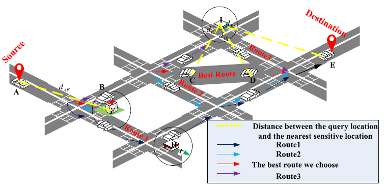
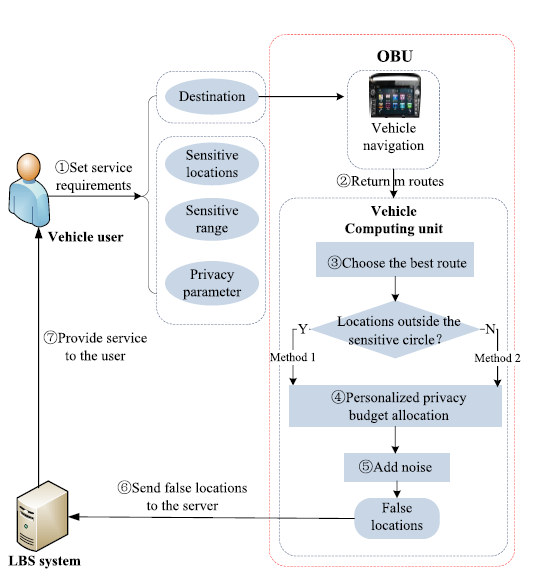
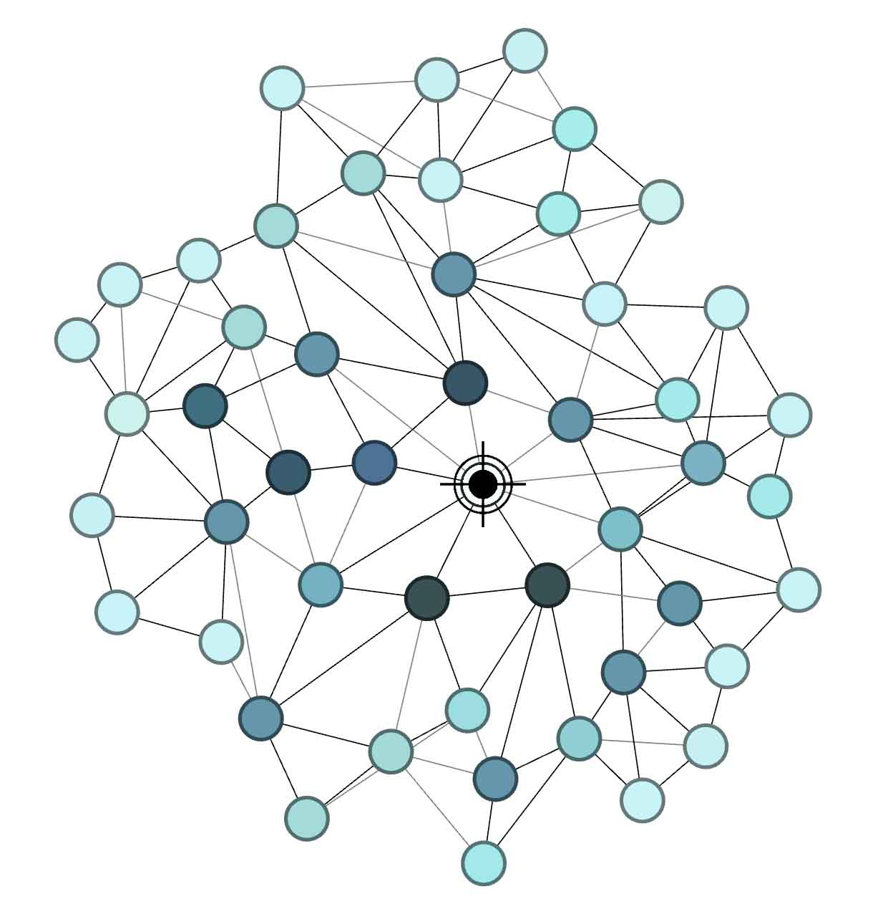

一周工作总结 （2020/11/23~11/29）
这周主要看了几篇DP和Game theory的文章
（1）Personalized Location Privacy Protection for Location-Based Services in Vehicular Networks
（2）Sensitivity Analysis for Non-Interactive Differential Privacy: Bounds and Efficient Algorithms
（3）A Trust-Grained Personalized Privacy-Preserving Scheme for Big Social
一 车载网络中基于位置服务的个性化位置隐私保护
Abstract—With the development of vehicular network, location-based services (LBSs) provide increasing diversified services for drivers and passengers. When users enjoy the services, users’ location needs to be constantly updated to service providers, which causes the location information to be speculated and attacked by attackers. However, existing schemes don’t provide differentiated protection for users’ different locations, which may lead to the leakage of location information. Therefore, we propose a location privacy protection method to satisfy users’ personalized privacy needs with reasonable protection of their privacy. Firstly, we define a normalized decision matrix to describe the efficiency and privacy effects of a route, and establish a multi-attribute utility function to quantify the utility of different routes for route selection. Then, according to users’ personalized privacy protection need, we allocate the privacy budget for each query location on the selected route based on the distance between it and his nearest sensitive location. Experimental results demonstrate that compared to existing methods, our scheme can meet the user’s service requirements and achieve better service quality under the conditions of reasonable protection of their privacy.
关键词：Personalized differential privacy, privacy budget allocation, the optimal route, quality of service.
个性化差分隐私、隐私预算分配、最佳路径、服务质量
位置差分隐私 Location Differential Privacy

其中车辆用户的位置在A，目的地是E，敏感位置F，H，I。

（1）Route Selection
$$
d_{k1}^o= \begin{matrix} \sum_{i=1}^n \sqrt{(x_{i+1}^k-x_{i}^k)^2+(y_{i+1}^k-y_i^k)^2} \end{matrix}
\
d_{k2}^s = \sum^{n.N}_{i,j=1} \lambda d_{ij}^k
$$
多属性理论，第一个属性用$d_{k1}^o$表示第$k_{th}$路径的总长度，第二个属性用$d_{k2}^s$表示第$k$ 条路径上的所有查询位置与其最近的敏感位置之间的距离之和。
影响用户选择的属性集表示为$\{ d_{k1}^o,d_{k2}^s \}$。然后对他们进行归一化：
$$
r_{k1}=\frac{ max\{{ d_{k1}^o }\}-d_{ k1 }^o }{ max\{d_{k1}^o \}-min\{ d_{k1}^o \}}\\
r_{k2}=\frac{ max\{{ d_{k2}^s }\}-d_{ k2 }^s }{ max\{d_{k2}^s \}-min\{ d_{k2}^s \}}
$$
用户的路径效用：
$$
z_i = w_1r_{i1}+w_2r_{i2}
$$
使用信息熵来得到相关的权重：
$$
w_j = \frac{\lambda_jd_j}{\lambda_1d_1+\lambda_2d_2}j=1,2,
$$
其中$\lambda_j$是用户对于一个确定属性的偏好。
（2）Personalize Privacy Budget Allocation
method 1：保护在敏感圈外的位置
method 2：保护在敏感圈内的位置
敏感圈半径$r$：基于地理位置不可分。用户的真实位置与扰动位置之间的距离表示如下：
$$
rr = \frac{-1}{\epsilon_i}(W_{-1}(\frac{Z-1}{\epsilon})+1)z = rand(0,1)
$$
其中，z表示概率的选择。如果用户将真实位置和扰动位置之间的距离的可接受误差设置为$\Delta$，则应满足$rr<\Delta$。所以敏感度圆的半径$r$为
$$
r = \frac{-Sum}{\epsilon\Delta}(W_{-1}(\frac{Z-1}{e})+1)
$$
Method 1: 对于敏感度圆外的位置$A,C,D,E$而言，车辆计算单元根据这些查询位置和最近的敏感位置之间的距离进行个性化隐私预算分配，每个位置分配的隐私预算可以表示为
$$
\epsilon_i = \frac{\lambda d_{i,j}}{\sum_{i=1}^n\sum_{j=1}^N \lambda d_{i,j} \epsilon_1}
$$
其中，$L_i$表示用户当前的位置，$S_j$表示敏感位置，$\lambda=1$意味着$L_i$选择$S_j$作为它最近的敏感位置。
Method 2：对于敏感圆的个性化位置隐私保护，我们采用平等的隐私预算分配方法。敏感圆中的位置B的隐私预算可以如下表示，
$$
\epsilon_B=\frac{\epsilon_1-(\epsilon_A+\epsilon_C+\epsilon_D+\epsilon_E)}{n}-m\times dd
$$
dd是由用户设置的常数，这意味着敏感圆中隐私预算的大小将以相等差的形式变化。n是敏感圆中的位置数。 对于每次分配，我们使用PSO-SLG算法[7]来平衡隐私和服务质量，以获得最佳的隐私预算εB
二 非交互式差分隐私的灵敏度分析：边界和高效算法
Abstract—Differential privacy (DP) has gained significant attention lately as the state of the art in privacy protection. It achieves privacy by adding noise to query answers. We study the problem of privately and accurately answering a set of statistical range queries in batch mode (i.e., under non-interactive DP). The noise magnitude in DP depends directly on the sensitivity of a query set, and calculating sensitivity was proven to be NP-hard. Therefore, efficiently bounding the sensitivity of a given query set is still an open research problem. In this work, we propose upper bounds on sensitivity that are tighter than those in previous work. We also propose a formulation to exactly calculate sensitivity for a set of COUNT queries. However, it is impractical to implement these bounds without sophisticated methods. We therefore introduce methods that build a graph model G based on a query set Q, such that implementing the aforementioned bounds can be achieved by solving two well-known clique problems on G. We make use of the literature in solving these clique problems to realize our bounds efficiently. Experimental results show that for query sets with a few hundred queries, it takes only a few seconds to obtain results.
定义 （$S_{L_1}(Q)$）: 让$q(D)$表示查询$q$在数据库$D$上的输出。给定查询集$Q$，$Q$的敏感度，表示为$S_{L_1}(Q)$：
$$
S_{L_1}(Q) = \max_{D,D’}(\sum_{q\in Q}|q(D)-q(D’)|)
$$
最大团问题（Maximum Clique Problem, MCP）是图论中一个经典的组合优化问题，也是一类NP完全问题。最大团问题又称为最大独立集问题（Maximum Independent Set Problem）。目前，求解MCP问题的算法主要分为两类：确定性算法和启发式算法。确定性算法有回溯法、分支限界法等，启发式算法、蚁群算法、顺序贪婪算法、DLS-MC算法和智能搜索算法等。
给定无向图$G=(V,E)$，其中$V$是顶点集；$E$是$V$边集。如果$U$属于$V$，且对任意两个顶点$u，v∈U$有$(u,v)∈E$，则称$U$是$G$的完全子图。$G$的完全子图$U$是$G$的一个团当且仅当$U$不包含在$G$的更大的完全子图中。$G$的最大团是指$G$中所含顶点数最多的团。
如果$U$属于$V$，且对任意$u，v∈U$有$(u,v)$不属于$E$，则称$U$是$G$的空子图。$G$的空子图$U$是$G$的独立集当且仅当$U$不包含在$G$的更大的空子图中。$G$的最大独立集是$G$中所含顶点数最多的独立集。
对于任一无向图$G=(V,E)$，其补图$G’=(V’,E’)$定义为：$V’=V$，且$(u,v)∈E’$当且仅当$(u,v)∉E$。
如果$U$是$G$的完全子图，则它也是$G’$的空子图，反之亦然。因此，$G$的团与$G’$的独立集之间存在一一对应的关系。特殊地，$U$是$G$的最大团当且仅当$U$是$G’$的最大独立集。
三 大社会的信任型个性化隐私保护方案
摘要—在大数据时代，社交网络应用程序的快速发展已成为至关重要的数据源，而大量个人数据的收集却引起了人们对隐私的重大关注。 差异性隐私已成为一种有效的工具，可以在获取有用信息的同时提供强大的隐私保证。 但是，当前大多数提议的解决方案都假定网络中的所有个人都需要统一级别的隐私保护，这排除了个人的个性化要求。 为了解决这个问题，在本文中，我们通过结合信任的概念，提出了一种信任粒度的个性化差异隐私机制，称为TGDP。 具体来说，每当一个用户想要获取另一个用户的个人信息时，建议的机制都会返回一个相应的私人响应，其中为每个人选择的隐私级别取决于他们在网络中的信任值。 与传统方法相比，该方案可以提供一种细粒度的差异隐私保护方法，同时保证了社交网络的实用性。 最后，对该方案进行了分析评估，并在实际数据上进行了实验证明，这反映了其有效性和实用性。
个性化差分隐私
定义 (Personalized Differential Privacy)一个随机算法$M$给任一一对相邻数据集$D_1$和$D_2$$\psi-differential -privacy$，并且对于任一集的输出$\Omega$，$M$满足：
$$
P_r[M(D_1)\in \Omega]\le e^{\epsilon_{\varphi}(i)}\cdot P_r[M(D_2\in \Omega)]
$$
其中，$\epsilon_{\varphi}(i)$是用户的隐私需求。
Problem 1：给定社交网络$G(V,E)$中的两个随机用户$u_i$和$u_j$，设计一种有效的机制$M1$，以基于包括交互频率和拓扑结构在内的多种因素来评估$u_i$对$u_j$的信任值$T(i,j)$的关系。
Problem 2: 设计一个隐私感知机制$M_2:D\rightarrow \Delta(D)^N$在社交网络上私密的发布用户的隐私数据$d_i\in D$。机制$M_2$应该具有$\epsilon (t_{i,j}-differential privacy)$对数据集$D_i$可以生成可变响应$y_{i,j}$

$T(i,j)$需要考虑两个因素：
1） 交互因素，客观的可信度随用户之间的交互频率而定。$I_{i,j}$表示两个用户节点之间总的交互数。
2）拓扑关系因子：$d_{i,j}$表示连接节点$i$和$j$的最短距离。$DC_i$用来表示社会图中的度中心性。
信任值计算
考虑如下两个因素：
1）Interpersonal implicit trust人际关系隐含信任
社交的互动频率$f$和持续时间$d_u$被认为是两个关键的因素，其对可信赖性的贡献可建模为：
$$
$F(x|f)=\frac{1}{\sigma_F \sqrt{2\pi}}\int^f_{-\infty} e^{-\frac{(x-\mu_F)^2}{2\sigma^2_F}}dx
\\D_u(x|d_u)=\frac{1}{\sigma_{D_u} \sqrt{2\pi}}\int^f_{-\infty} e^{-\frac{(x-\mu_{D_u})^2}{2\sigma^2_{D_u}}}dx
$$
其中$\mu_F$和$\mu_{D_u}$分别是交互周期和交互频率的平均值，$\sigma_F$和$\sigma_{D_u}$是标准误差
隐式信任水平$T_{II}(i,j)$可以度量为：
$$
T_{II}(i,j) = \omega_1 F+ \omega_2 D_u
$$
2) 拓扑关系信任：
社会距离
度中心 用户的度表示这个用户有多少个朋友
$$
T_{T,R}(i,j)=\frac{DC_j}{Neigh(i)_{max}}\times \delta^{(1-\frac{1}{d_{i,j}})}
$$
将信任映射到隐私
将个人隐式信任和拓扑关系信任合并在一起，有
$T(i.j)=\alpha T_{II}(i,j)+(1-\alpha)T_{TR}(i,j)$
在量化用户的信任度之后，隐私保护度也可以做如下计算：
$\epsilon(t_{i,j})=\frac{t_{i,j}}{t_{i,j}+\sigma}$
其中$\epsilon$是众所周知的隐私参数控制差分隐私保证的力度。因此，计算相应的查询响应
$y_i = f(D)+Lap(\frac{S(f)}{\epsilon})$